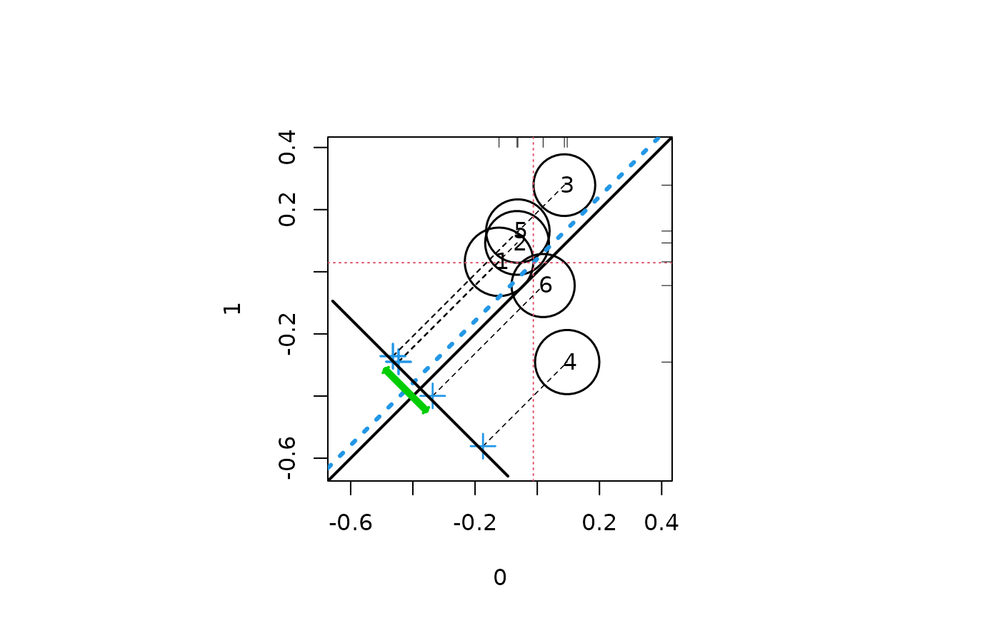
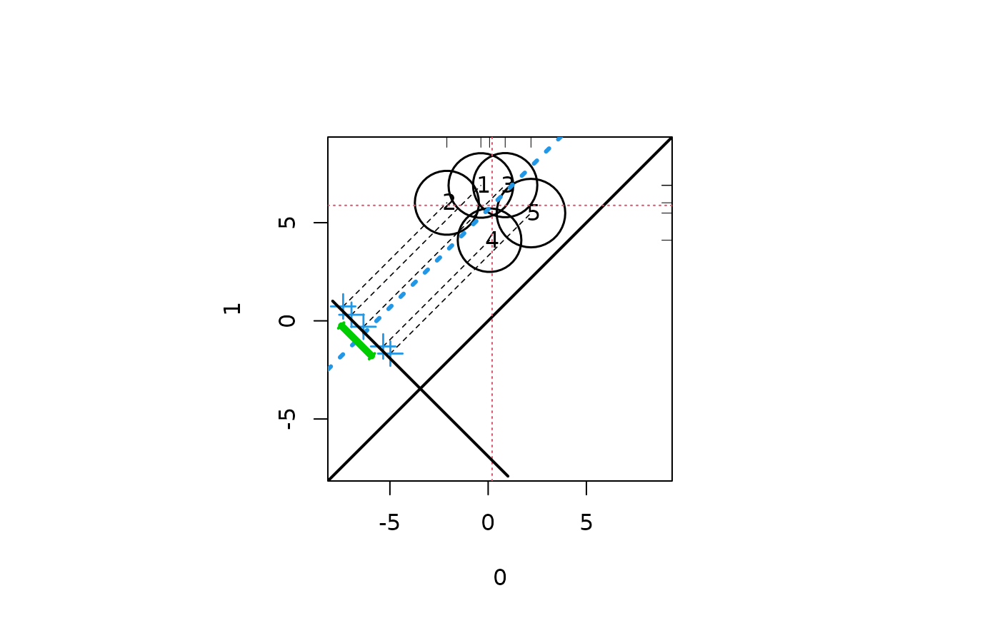
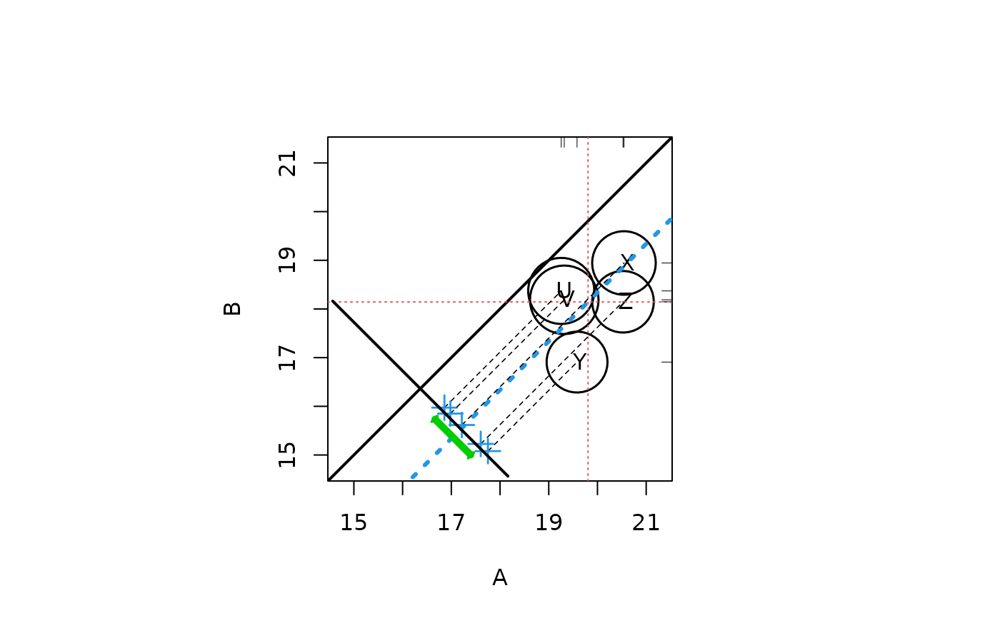

Displays a graphic that summarizes outcomes in a propensity score analysis, based on strata that have been defined in the first Phase of a propensity score analysis (PSA). The graphic displays contributions of individual strata to the overall effect, weighing contributions of individual strata according to the relative sizes of the respective strata. The overall effect is plotted as a heavy dashed diagonal line that runs parallel to the identity diagonal.
circ.psa(
response,
treatment = NULL,
strata = NULL,
summary = FALSE,
statistic = "mean",
trim = 0,
revc = FALSE,
confint = TRUE,
sw = 0.4,
ne = 0.5,
inc = 0.25,
pw = 0.4,
lab = TRUE,
labcex = 1,
xlab = NULL,
ylab = NULL,
main = NULL
)Either a numeric vector containing the response of interest in a propensity score analysis, or a three column array containing response, treatment and strata.
Binary variable of same length as response;
generally 0 for 'control,' 1 for 'treatment'. A character vector with two
labels or factor with two levels are also accepted.
Generally integer variable; a vector of same length as
response indicating the derived strata from estimated propensity
scores. Generally 5 or 6 strata used, but function is effective for more
strata. In the case when strata are defined via unique propensity scores (as
from a tree), user may wish to define strata using factor.
Logical (default FALSE). If TRUE then
response must have rows corresponding to number of strata; the first
two columns should contain treatment and control group sizes for each
stratum, and the pair of columns should contain the appropriate summary
statistics for each statum. For example, the four summary columns might
have been generated by the strata.summary output of loess.psa.
A scalar summary of the center of the response distribution. Seen next item below. Default = "mean". Note that to generate this statistic the full vector of responses must have been input, not summaries.
Allows for a trimmed mean as outcome measure, where trim is from 0 to .5 (.5 implying median).
Logical; if TRUE then X and Y axes are interchanged in
plot.
Logical; if TRUE adds an approximate 95% confidence
interval for the mean. The interval may not be realistic it the trim
argument exceeds zero.
Numerical argument (default = 0.4); extends axes on lower ends, effectively moving circles to lower left.
Numerical argument (default = 0.5); extends axes on upper ends, effectively moving circles to upper right.
Numerical argument (default = 0.35); controls circle sizes, but
relative circle sizes are controlled via pw. In general one wants
circle areas to appear subjectively to be sized in accordance with strata
sizes.
numerical argument (default = 0.4); controls relative circle
sizes. pw denotes power or exponent for radius of circle.
Logical (default TRUE); labels circles with stratum labels.
numerical argument (default = 1); controls the size of the circle labels.
Label for horizontal axis, by default taken from
treatment.
Label for vertical axis, by default taken from treatment.
Main label for graph.
Generate a Propensity Assessment Plot, as well as numerical data for
An array with rows corresponding to strata and four columns; these show counts for control and treatment groups, as well as (possibly trimmed) mean response values for control and treatment.
Weighted mean of response for (Name1) group. Name
taken from treatment.
Weighted mean of
response for (Name2) group. Name taken from treatment.
Average Treatment Effect.
Weighted standard error
for ATE
Ratio of the average treatement effect and a standard error based on weighting of stratum variances.
Estimate of degree of freedom; response vector length minus twice number of strata.
Approximate 95% confidence interval for overall effect size.
A circle is plotted for each stratum, centered on the means for the
treatment and control groups (for the X and Y axes)
respectively. The sizes of the circles correspond to the relative sizes of
the strata. A diagonal line (lower left to upper right) shows the identity,
X=Y, so that circles on, say, the lower side of this line show that
the corresponding X mean is larger than the Y mean for that
stratum, and vice-versa. Parallel projections are made from the centers of
the strata-cum-circles to difference scores that are plotted on a line
segment on the lower-left corner of the graphic; the average difference,
which corresponds to the average treatment effect (ATE) for the overall
treatment effect, is plotted as a heavy (dark blue) dashed line parallel to
the identity diagonal. Rug plots are shown on the upper and right margins of
the graphic, for the X and Y marginal distributions. A 95%
confidence interval for the overall effect is plotted to the left of the
distribution of the stratum difference scores, centered on the ATE. Trimmed
means can replace the conventional mean for both the ATE and the marginal
distributions (however, the confidence interval calculations are likely to
become less trustworthy as larger values of the trim argument are used).
##Random data with effect size 0
response <- rnorm(1000)
treatment <- sample(c(0,1), 1000, replace = TRUE)
strata <- sample(1:6, 1000, replace = TRUE)
circ.psa(response, treatment, strata)

#> $summary.strata
#> n.0 n.1 means.0 means.1
#> 1 77 90 -0.01466845 -0.04442946
#> 2 78 79 -0.06780324 0.26734417
#> 3 76 71 -0.17498127 -0.09495994
#> 4 96 84 0.13134217 0.02157962
#> 5 78 88 -0.12419976 -0.02102184
#> 6 101 82 0.10996109 -0.10266861
#>
#> $wtd.Mn.0
#> [1] -0.01566968
#>
#> $wtd.Mn.1
#> [1] 0.002200555
#>
#> $ATE
#> [1] 0.01787023
#>
#> $se.wtd
#> [1] 0.06627795
#>
#> $approx.t
#> [1] 0.2696256
#>
#> $df
#> [1] 988
#>
#> $CI.95
#> [1] -0.1121915 0.1479319
#>
##Random data with effect size -.2
response <- c(rnorm(500, 0, 12), rnorm(500, 6, 12))
treatment <- c(rep(0, 500), rep(1,500))
strata <- sample(1:5, 1000, replace = TRUE)
aaa <- cbind(response, treatment, strata)
circ.psa(aaa)

#> $summary.strata
#> n.0 n.1 means.0 means.1
#> 1 109 92 0.06061073 6.429138
#> 2 107 95 2.05044543 7.307719
#> 3 95 100 -0.51496035 6.621817
#> 4 102 92 -0.83491088 5.783739
#> 5 87 121 0.04153935 5.877122
#>
#> $wtd.Mn.0
#> [1] 0.1726229
#>
#> $wtd.Mn.1
#> [1] 6.404157
#>
#> $ATE
#> [1] 6.231534
#>
#> $se.wtd
#> [1] 0.7560071
#>
#> $approx.t
#> [1] 8.242693
#>
#> $df
#> [1] 990
#>
#> $CI.95
#> [1] 4.747974 7.715095
#>
##Random data with effect size -2
response <- c(rt(100,3) * 2 + 20, rt(100,12) * 2 + 18)
treatment <- rep(c("A","B"), each = 100)
strata <- sample(c("X","Y","Z","U","V"), 200, replace = TRUE)
circ.psa(response, treatment, strata)

#> $summary.strata
#> n.A n.B means.A means.B
#> U 23 17 20.37282 19.12245
#> V 25 22 20.65343 17.81284
#> X 17 30 19.76624 17.87898
#> Y 18 19 19.72954 17.57975
#> Z 17 12 19.59112 17.94277
#>
#> $wtd.Mn.A
#> [1] 20.06386
#>
#> $wtd.Mn.B
#> [1] 18.06602
#>
#> $ATE
#> [1] -1.997841
#>
#> $se.wtd
#> [1] 0.3231541
#>
#> $approx.t
#> [1] -6.182318
#>
#> $df
#> [1] 190
#>
#> $CI.95
#> [1] -2.635272 -1.360411
#>
##Tree derived strata
library(rpart)
data(lindner)
attach(lindner)
#> The following objects are masked from lindner (pos = 3):
#>
#> abcix, acutemi, cardbill, diabetic, ejecfrac, female, height,
#> lifepres, stent, ves1proc
#> The following objects are masked from lindner (pos = 4):
#>
#> abcix, acutemi, cardbill, diabetic, ejecfrac, female, height,
#> lifepres, stent, ves1proc
lindner.rpart <- rpart(abcix ~ stent + height + female + diabetic +
acutemi + ejecfrac + ves1proc, data = lindner, method = "class")
lindner.tree<-factor(lindner.rpart$where, labels = 1:6)
circ.psa(log(cardbill), abcix, lindner.tree)
#> $summary.strata
#> n.0 n.1 means.0 means.1
#> 1 14 2 9.213456 9.653571
#> 2 29 16 9.278627 9.421610
#> 3 58 87 9.507137 9.504301
#> 4 131 256 9.397094 9.575469
#> 5 12 79 9.051331 9.427481
#> 6 54 258 9.472841 9.670249
#>
#> $wtd.Mn.0
#> [1] 9.396949
#>
#> $wtd.Mn.1
#> [1] 9.57558
#>
#> $ATE
#> [1] 0.1786314
#>
#> $se.wtd
#> [1] 0.05838647
#>
#> $approx.t
#> [1] 3.059466
#>
#> $df
#> [1] 984
#>
#> $CI.95
#> [1] 0.06405511 0.29320771
#>
##Loess derived strata
lindner.ps <- glm(abcix ~ stent + height + female +
diabetic + acutemi + ejecfrac + ves1proc,
data = lindner, family = binomial)
ps<-lindner.ps$fitted
lindner.loess<-loess.psa(log(cardbill), abcix, ps)
circ.psa(lindner.loess$summary.strata[, 1:4], summary = TRUE,
inc = .1, labcex = .7)
#> $summary.strata
#> counts.0 counts.1 means.0 means.1
#> 1 58 42 9.338939 9.455965
#> 2 37 63 9.407877 9.503125
#> 3 35 64 9.390499 9.540272
#> 4 40 60 9.365029 9.574458
#> 5 29 70 9.369748 9.593021
#> 6 36 65 9.386188 9.604613
#> 7 24 74 9.424611 9.616556
#> 8 19 82 9.473078 9.612104
#> 9 11 87 9.559145 9.603100
#> 10 9 91 9.707606 9.598751
#>
#> $wtd.Mn.means.0
#> [1] 9.442172
#>
#> $wtd.Mn.means.1
#> [1] 9.570121
#>
#> $ATE
#> [1] 0.1279487
#>
#> $se.wtd
#> NULL
#>
#> $approx.t
#> numeric(0)
#>
#> $df
#> [1] 976
#>
#> $CI.95
#> [1] NA NA
#>